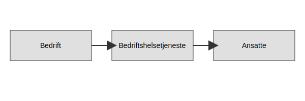
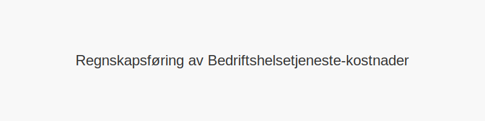
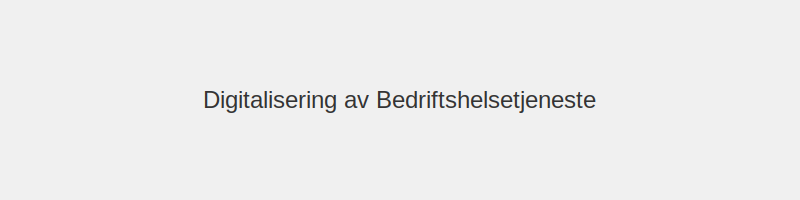

Bedriftshelsetjeneste er en lovpålagt Helse, miljø og sikkerhet (HMS)-tjeneste i Norge som har som formål å forebygge arbeidsrelaterte sykdommer og skader. Tjenesten yter faglig støtte til virksomheter og ansatte innenfor ulike bransjer, og arbeider tett med både ledelse og arbeidsmiljøutvalg.
1. Hva er Bedriftshelsetjeneste?
Bedriftshelsetjeneste (BHT) er et eksternt fagmiljø med tverrfaglig kompetanse innen medisin, yrkeshygiene, ergonomi og psykososialt arbeidsmiljø. BHT skal bistå virksomheter med kartlegging, risikovurdering og oppfølging av arbeidsmiljøet.
2. Lovgrunnlag
Bedriftshelsetjeneste er regulert i arbeidsmiljøloven § 3-3 og tilhørende forskrift om arbeidsmiljø, sikkerhet og helse (internkontrollforskriften). Nedenfor er en oversikt over krav til virksomheter:
| Antall ansatte | Krav til BHT-tilknytning | Kommentar |
|---|---|---|
| 50+ | Obligatorisk | Alle virksomheter med 50 eller flere ansatte må tilknytte BHT |
| 20–49 | Obligatorisk ved særlig risiko | Når arbeidsmiljøet utgjør høy risiko for helse eller sikkerhet |
| Under 20 | Anbefalt, men ikke pålagt | Mindre virksomheter oppfordres til å benytte BHT frivillig |
3. Tjenester og oppgaver
BHT tilbyr en rekke tjenester tilpasset virksomhetens behov:
- Helseundersøkelser: Systematiske legesjekker og arbeidsmedisinske vurderinger
- Kartlegging av arbeidsmiljø: Måling av støy, kjemikalier, belastningsskader og psykososiale forhold
- Risikostyring: Analyser, handlingsplaner og oppfølging av tiltak
- Opplæring og veiledning: Kurs i ergonomi, førstehjelp og HMS-ledelse
- Internkontrollstøtte: Bidra til dokumentasjon og prosesser i Hva er internkontroll?
4. Samarbeid med AMU og Internkontroll
Samarbeid med Arbeidsmiljøutvalg (AMU) og integrering i virksomhetens internkontrollsystem er avgjørende for et helhetlig HMS-arbeid.
5. Fordeler ved Bedriftshelsetjeneste
Ved en aktiv BHT-tilknytning får virksomheten:
- Forebygging: Redusert sykefravær og bedre arbeidsmiljø
- Konkurransefortrinn: Livskraftige, robuste ansatte og omdømme
- Lovoppfyllelse: Sikring av krav i arbeidsmiljøloven og forskrifter
- Dokumentasjon: Systematisk oppfølging av helse og sikkerhet for intern og ekstern rapportering
6. Kostnader og finansiering
| Type kostnad | Beskrivelse |
|---|---|
| Årsavgift | Fast pris basert på antall ansatte |
| Konsulenttimer | Timepriser for prosjekter og kartlegging |
| Kurs og opplæring | Pakker eller enkeltkurs |
7. Illustrasjon: Roller i Bedriftshelsetjeneste

8. Hvordan etablere bedriftshelsetjeneste
For å etablere BHT i din virksomhet kan du følge disse trinnene:
- Kartlegg behov og risiko
- Anskaff dokumentasjon på tjenesteyterens godkjenning
- Inngå avtale om omfang og tjenester
- Integrer BHT i internkontroll og AMU
- Evaluer og revider årlig
For mer om internkontroll og HMS, se Hva er internkontroll?.
9. Regnskapsføring av utgifter til Bedriftshelsetjeneste

Når du fører regnskap for kostnader knyttet til bedriftshelsetjeneste, er det viktig å klassifisere utgiftene riktig:
| Konto | Beskrivelse | Regnskapstype |
|---|---|---|
| 6900 | Annen driftskostnad, tjenester | Driftskostnader |
| 6800 | Annen personalkostnad, HMS-tiltak | Personalkostnad |
| 7300 | Investeringer i HMS-utstyr og opplæring | Immaterielle eiendeler (evt. avskrivning) |
Disse kostnadene kan også påvirke personalkostnader og driftskostnader.
10. Skattefradrag og økonomiske insentiver
Bedriftshelsetjeneste-utgifter gir vanligvis fradragsrett som driftskostnader. Ifølge skatteloven kan virksomheter kreve fradrag for:
- Utgifter til helseundersøkelser og kartlegging
- Kurs i HMS og ergonomi
- Risikovurderinger og tiltaksplaner
Se Hva er fradrag? for mer informasjon om fradragsmuligheter.
11. Digitalisering og verktøy

Moderne bedriftshelsetjenester tilbyr digitale løsninger som:
- Nettbaserte helseundersøkelser og spørreskjemaer
- Mobilapper for intern HMS-rapportering
- Dashboard for risikoområder og statistikk
- Integrasjon med API-integrasjon, automatisering og regnskap for sømløs dataflyt
Dette effektiviserer både administrasjon og oppfølging av HMS-arbeidet.
12. Vanlige utfordringer og løsninger
| Utfordring | Løsning |
|---|---|
| Lav deltakelse blant ansatte | Kommunikasjonsplan og motivasjonskampanjer |
| Uklare ansvarsforhold | Definere roller i AMU og ledelse |
| Manglende dokumentasjon | Implementere digitale dokumentasjonssystemer |
| Kostnadsbegrensninger | Velge modulbaserte tjenester |
For mer om roller i bedriftshelsetjenesten, se Roller i Bedriftshelsetjeneste.
{kind=link}
13. Fremtidige trender i Bedriftshelsetjeneste
Utviklingen innen bedriftshelsetjeneste styres av:
- Telemedisin og virtuelle konsultasjoner
- Økt bruk av wearables for helsedata
- Kunstig intelligens i risikovurdering
- Fokus på psykisk helse og stressmestring
- Tverrfaglige team og partnernettverk
14. Oppsummering
Bedriftshelsetjeneste er en sentral del av HMS-arbeidet i norske virksomheter. En helhetlig tilnærming inkluderer:
- Riktig regnskapsføring og skattefradrag
- Tett samarbeid med AMU og internkontroll
- Digitalisering for bedre oppfølging
- Klare roller og ansvarsforhold
- Kontinuerlig evaluering av tiltak
Ved å følge beste praksis kan virksomheter redusere risiko, forbedre arbeidsmiljø og oppnå lovpålagt etterlevelse.